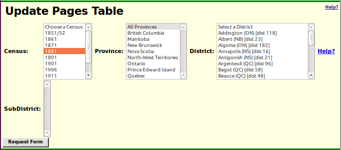
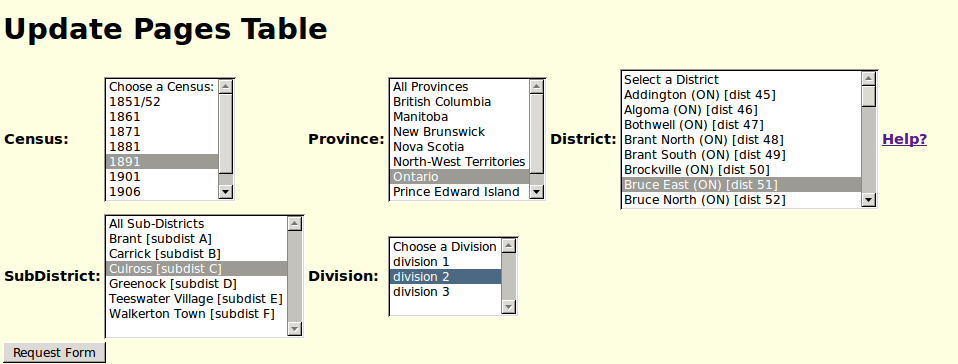
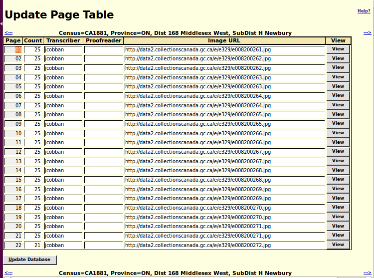

How to Update the Pages Table
The Pages table is intended to provide information on each page of each division of the enumeration of living individuals of all of the censuses, starting with the 1851/2 and 1861 censuses of the Colony of Canada, and including the 1871, 1881, 1891, 1901, 1911 and 1921 censuses of the Dominion of Canada, and the 1906 and 1916 censuses of the prairie provinces. The table is not complete because there is no automated way to collect all of the necessary information. The Edit Pages Table page is used to manage the collection of this information.
Further information on the use of each of the fields on this page is available by holding the mouse over any field or button on the page.
This page prompts for the complete identification of an enumeration division. When you first enter this page it appears like:
The Census selection list is used to specify the year of the census enumeration for which you wish to update a Sub-District description. Until you select a year the selection list of provinces and the selection list of census districts are not populated.
The Province selection list is an alphabetical list of the provinces in the specified census. It is filled in when you select a specific census year. This selection list is used if you wish to limit the displayed list of districts to a specific province. Pre-Confederation censuses were administered independently in each of the colonies, and in Canada East and Canada West. For these censuses it is necessary to select the colony/province, and the application initially selects Canada West (later re-named Ontario).
The District selection list is an alphabetical list of census districts, roughly equivalent to federal electoral ridings in Post-Confederation censuses, and to counties in Pre-Confederation censuses. When you first select a post-Confederation census year this is initialized with a list of all districts in the selected census. For pre-Confederation censuses it is initialized with a list of all counties in Canada West (Ontario).
The Sub-District selection list is an alphabetical list of census sub-districts within a district. Generally they correspond to city wards, towns, or townships. This selection list is not populated until you select an individual district.
The Division selection list does not appear until you select a Sub-District. If there is more than one division in the Sub-District, you must select the division before submitting the request.
Once you have selected the desired division the dialogue should look something like this:
The "Request Form" button is used to request that the edit page for the pages within the individual enumeration schedule of the identified sub-district be displayed. This result can also be achieved by pressing the Enter key.
When you submit the request a form displaying the contents of the portion of the Pages table for the requested enumeration division is displayed to permit you to edit the fields.
At the top and the bottom of the table of fields there is a line with three components:
- An arrow pointing left. This is a hyperlink to the preceding division within the current district. If you click on this hyperlink any changes you have made to the page descriptions of the current division are discarded. You must click on the "Update Database" button at the bottom of the form to apply changes.
- A description of the current division being editted.
- An arrow pointing right. This is a hyperlink to the next division within the current district. If you click on this hyperlink any changes you have made to the page descriptions of the current division are discarded. You must click on the "Update Database" button at the bottom of the form to apply changes.
The body of the form functions like a spreadsheet.
- The forward and backward tab keys and the left and right arrow keys change the selected cell in the table to the left or the right. Motion wraps around at the left and right edges of the table.
- The up and down arrows change the selected cell in the table up or down one row at a time. Motion wraps around at the bottom and top of the table.
- The enter (return) key changes the selected cell in the table down one row at a time, rather than submitting the form as happens on simpler pages.
Note that you can hide any column by clicking on the column header with the mouse. You can subsequently display the column by clicking on the narrow place holder in the column header.
The Page number field is a sequential number from the first to the last page number defined for the current division. It is not editable.
The Count field contains the count of the number of individuals enumerated in the image of the original. For most pages it is the number of rows on the original form. This is a decimal number.
The Transcriber field contains the user identifier of the individual responsible for transcribing this page. It is set to the first user to edit the page. Once set the page is edittable only by that user, all other users, including the proofreader, can only comment on the transcription.
The Proofreader field contains the user identifier of the individual who first entered comments on this page.
The Image field contains the URL of the original census image as it is available from the Library and Archives of Canada web-site. The first time a division is accessed this field is initialized in each row from information in the Sub-District table, assuming the most common pattern for page images within the particular census. The Sub-District table contains information on the first image URL in a division.
The button causes the browser window to be split in two so the image identified by the Image URL column is visible. If the displayed image does not show the correct page from the original census then the backward and forward arrows (<--- and --->) may be used to move through the image set. As you change the displayed image in this way the value of the URL Image field in the table is changed so it always reflects the currently displayed image.
Further information on the use of each of the fields on this page is available by holding the cursor over the field or button.
You must click on the button at the bottom of the form to apply changes. If you click on the left or right arrow hyperlinks to the preceding and following divisions in the web browser tool line any changes you made to the table are discarded. Observe that unlike simpler forms you cannot submit this form by pressing the Enter key, because this simply moves the selected cell down one row in the table.
Once the database has been updated a page like the following is displayed.

There are usually three buttons displayed:
- The first button takes you back to the Pages table update request page just as it was immediately before you clicked on . You can then select any other census division to work on. Note that the last item in the trail of breadcrumbs in the page header and trailer is a hyperlink to that same page.
- If you were not editting the very first division in the district there is a button to request editting the division preceding the division you just editted.
- If you were not editting the very last division in the district there is a button to request editting the division following the division you just editted.